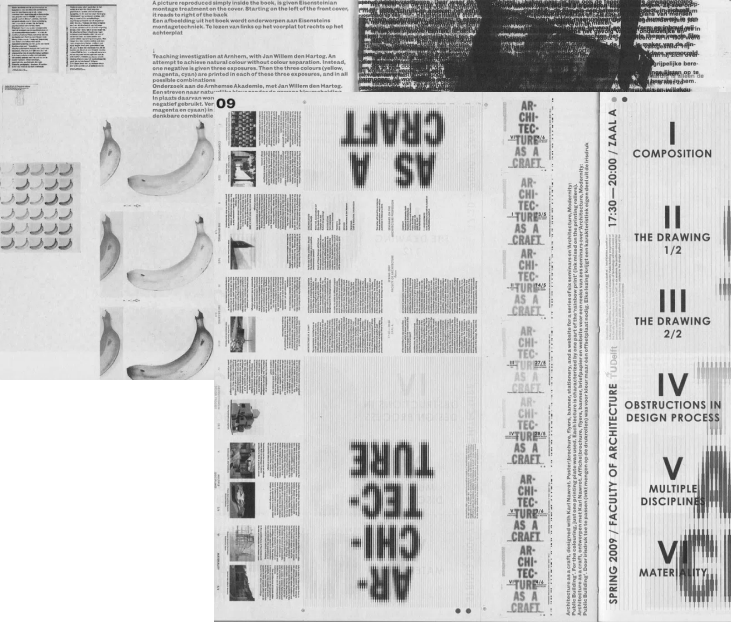
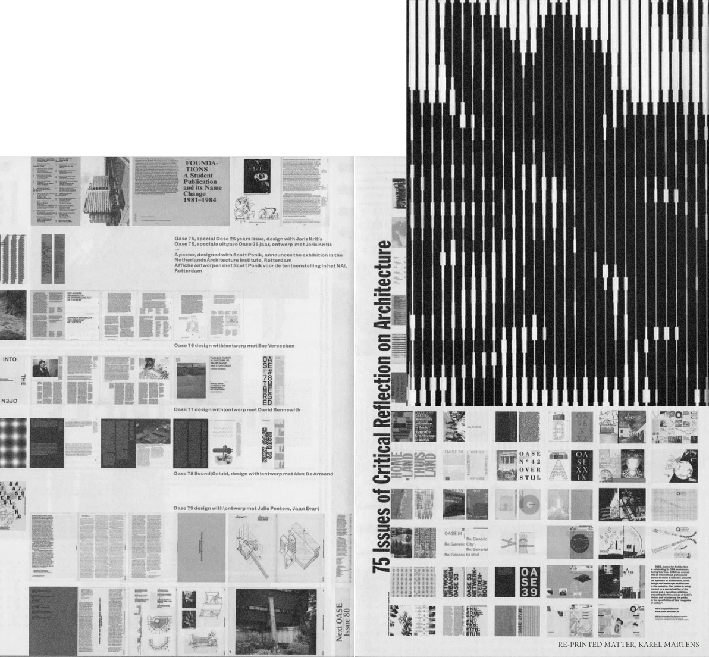

ABSENCE
IN DESIGN
IS VERY
IMPORTANT
Karel Martens on paying attention to the things we don’t see.
One of the best-known names in graphic design, the Dutch modernist master and teacher reflects on his work and career to date.
He may be 81 years old, with a career spanning 60 years and counting, but Karel Martens is still of the mindset that his work can always be better. It’s what drives the self-professed workaholic, he tells us over a video call, and it’s the reason he’s updated his historic monograph several times.
Throughout his impressive career he has turned his hand to stamps, coins and films – not to mention every other graphic design staple, from books to corporate identities.

I AM FROM THE GENERATION WHERE THE COMPUTER CAME TO US LATER IN LIFE
SO I STARTED MAKING SCANS OF THE
SLIDES AND IT ENDED UP BEING
THE
WRONG
RESOLUT
ION
To process this, he made a movie, a way for him to do something with the experience. At the time, he was working on a university lecture and as he always does, he pinned reference images on the wall as an “extension of memory”, an archive of sorts. Karel’s daughter – who incidentally is also a graphic de-signer – took pictures of the wall, every ten centimetres to make into presentation slides. And after the lecture, a pupil asked to have a copy of the slides, which for Karel, meant using a scanner for the first time.
When those first attempts at scans landed on Karel’s computer desktop, it was “a mess” – as he puts it, “full of shit, full of the wrong things”. With help from a technician at the computer lab, hundreds of Karel’s scans suddenly came to life as they were organised in a folder. “Let me make a movie out of it,” he thought, as he imagined the scans as frames, edited together
in an ordered sequence. “It was exciting. And it was also done with new technology.”
While Karel duly acknowledges that tradition is important, he also points out the necessity of criticality. A designer can still be part of a long tradition while questioning their purpose or process at the same time.
Why should something change? If a laborious, drawn-out process no longer offers benefits in its efficiency, economy or concept, then what is it a stylistic expression of? “For me,” says Karel, “that’s the starting point or a kind of measurement.”
He takes the example of the colour black.
An undying staple in design; in terms of Eurocentric design history, however, the colour black, in principle, originates from the bible. It was used as a representation of the human voice where there was no reason to give it a colour. Today, “it is very important to have that knowledge in history, so some people can form an argument to change it.” All that being said, as he pointed out later on in a conversation about how designers often play with distinctions, “When all the world is in colour, a black and white movie is a relief.”
Karel is just as much a teacher as he is a designer in the field. And this is where his remarkable breadth of knowledge comes in handy. Confident in his own opinions and values as a teacher, Karel prefers to guide students rather than “teach them things” in the definitive sense. If he sees a student who is always making the same kind of thing, Karel will say “why not, that’s one of the qualities of your voice. Nice voices don’t have to be perfect.”
